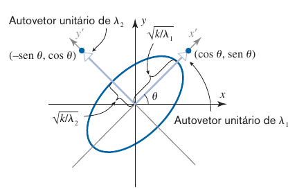

GAAL RCN00075 – 2025-1
\[ \begin{align*} {\color{blue}a}x^2+{\color{blue}b}y^2+{\color{blue}c}xy&= \begin{bmatrix} x & y \end{bmatrix} {\color{blue} \begin{bmatrix} a & c/2\\ c/2 & b\end{bmatrix} } \begin{bmatrix} x \\ y \end{bmatrix}\\ &=X^t {\color{blue}A} X, \quad \bar{X}=Q^tX \\ & =\bar{X}^t{\color{red}D}\bar{X}\\ &= \begin{bmatrix} x & y \end{bmatrix} {\color{red} \begin{bmatrix} \lambda_1 & 0\\ 0 & \lambda_2\end{bmatrix} }\\ & = {\color{red}\lambda_1}\bar{x}^2+{\color{red}\lambda_2}\bar{y}^2. \end{align*} \]

1 Informações Básicas
Início e Fim do Período: 24/03/2025 a 26/07/2025.
Horário e sala:
Quadro de Alocação de salas do ICT
| Dia | Horário | Sala |
|---|---|---|
| Segunda | 16h - 18h | Sala 2 (ICT) |
| Terça | 14h - 16h | Sala 2 (ICT) |
- Material a ser utilizado
Ementa: Busque por RCN00075 em quadro de horários:
MATRIZES E SISTEMAS LINEARES. DETERMINANTES. VETORES NO PLANO E NO ESPAÇO. RETAS E PLANOS. ESPAÇO \(\mathbb{R}^n\). AUTOVALORES E AUTOVETORES DE UMA MATRIZ. DIAGONALIZAÇÃO DE MATRIZES. RECONHECIMENTO DE CÔNICAS.Monitoria:
2 Apresentação do Curso
Este curso é constituído de dois módulos:
- Matrizes, Sistemas lineares, Determinates e Geometria Analítica;
- Álgebra Linear no \(\mathbb{R}^n\).
Usaremos como livro texto as referências [1] e [2]. A primeira está disponível para empréstimo na Biblioteca do campus – BRO. A segunda pode ser baixada aqui. É altamente recomendado que vocês consultem este material, de preferência, o livro físico.
As demais referência contidas na Seção 5 serão usadas como material auxiliar ao longo do curso.
3 Avaliação
A avaliação será feita mediante 3 Provas Escritas. A nota final (NF) será a média ponderada entre elas, dada da seguinte forma: \[ NF=0.2\cdot P_1+ 0.3\cdot P_2+0.5\cdot P_3, \] onde \(P_i\) é a nota da \(i\)-ésima prova.
Objetivos
As provas tem como objetivos avaliar se o aluno:
- É capaz de interpretar as questões corretamente e formular soluções para os problemas propostos.
- É capaz de produzir soluções, em formato de texto, compreensíveis, com nível de detalhamento e rigor adequados para que outros profissionais familiarizados com os conceitos possam entendê-las.
- Aprendeu os conceitos e técnicas ensinados em sala de aula.
- Sabe determinar quando a solução proposta resolve de fato o problema.
- Consegue desenvolver uma argumentação lógica-dedutiva para chegar-se à resposta final.
Critério de correção das provas
Com base nos objetivos apresentados acima, os critério de correção serão:
- Interpretação correta das questões.
- As soluções devem ser escrita com clareza, organização, rigor e detalhamento.
- Soluções desenvolvidas fora do conteúdo ensinado, mesmo que corretas, não serão consideradas.
- Questão com várias soluções será anulada.
- Resposta correta com solução errada será anulada.
Além disso, durante às provas, serão adotadas as seguinte medidas:
- Proibido compartilhar material.
- Só é permitida a saída após entrega definitiva da prova, ou seja, não é permitido ir ao banheiro ou beber água. A prova tem duração de no máximo 2 horas.
- É permitida a consulta a material (livros, notas de aula, caderno, apostilas e etc.) e uso de dispositivo computacional, como calculadora científica, ambos sem acesso a internet.
- Fraude detectada, mesmo depois, zera a nota.
Segunda Chamada
O Art. 98 do Regulamento dos Cursos de graduação garante ao aluno o direito a uma avaliação de Segunda Chamada (VR), sem a necessidade de justificativa! Portanto, aquele aluno que não puder ou não quiser fazer uma das provas, poderá faltar que seu direito à Segunda Chamada será garantido.
Cabe ressaltar que o conteúdo da Segunda Chamada será toda a matéria do semestre.
Como não há a necessidade de justificar a falta nas avaliações para ter o direito à Segunda Chamada garantido, alguns alunos usam este direito para fazer a Segunda Chamada quando não se sentem suficientemente preparados para alguma das avaliações.
Por conta disso, o aluno que estiver em dúvida entre fazer a prova ou a Segunda chamada, poderá comparecer no dia da prova e tentar fazê-la. Caso não se sinta preparado, poderá desistir e ainda terá o direito a fazer a Segunda Chamada. Aqueles que permanecerem e entregarem definitivamente a prova não terão o direito à Segunda Chamada.
Verificação Suplementar
Em concordância com o Regulamento dos Cursos de graduação em seu Art. 99, a Verificação Suplementar (VS) é vetada aos discentes já aprovados e é obrigatória para aqueles que tenham obtido média parcial entre 4,0 e 5,9, sendo esses dois limites incluídos.
4 Listas de Exercícios
Abaixo seguem os execícios das referências [1] e [2] e, também os da lista de GA plana, que devem ser feitos a fim de se preparar para a avaliação escrita. Os exercícios marcado com o símbolo SAC no livro, devem ser feitos usando uma ferramenta computacional, como por exemplo o python.
Veja as listas em Material Básico.
Matrizes, Sistemas Lineares e Determinantes
[1] § 3.1 (Matrizes): 1, 11, 13, 17, 35.
[1] § 3.2 (Matrizes): 1, 4, 23.
[1] § 2.2 (Sistemas Lineares): 1, 3, 5, 15, 17, 27, 29, 31.
[1] § 2.3 (Resolução de Sistemas Lineares): 9, 11, 13, 23, 25, 27, 29, 31, 39, 41, 43, 47.
[1] § 3.4 (Matriz Inversa): 49, 53, 57, 51, 55, 45, 20, 21.
[1] § 4.3 (Determinantes): 1, 3, 5, 7, 9, 13, 27, 29, 33, 47, 49, 51.
Geometria Analítica
GA em \(\mathbb{R}^2\) fazer os exercícios desta lista de GA plana
(Coordenadas e distância em \(\mathbb{R}^2\)): 1.1 (a,b,c), 1.3, 1.8.
(Vetores e Produto escalar em \(\mathbb{R}^2\)): 2.1 (a), 2.2, 2.5(b), 2.6 (a,b), 2.7, 2.10.
(Equação da Reta): 4.2(a,b), 4.5, 4.6, 4.9, 4.18.
GA em \(\mathbb{R}^3\)
[2] 3.3 (Produtos Vetorias): 2, 3, 4, 5, 7.
[1] § 1.4 (Retas e Planos): 3, 5, 7, 11, 15, 17, 21, 23.
[2] 4.3 (Distância de ponto a reta): 8, 9.
Álgebra Linear
[1] § 1.2 (Vetores em \(\mathbb{R}^n\)): 5, 11, 12, 14, 17.
[1] § 1.3 (Produto Escalar em \(\mathbb{R}^n\)): 1, 3, 5, 7, 9, 17, 19, 21, 23, 27, 29, 39, 46, 47, 51.
[2] 5.1 (LI e LD): 1, 3, 4, 8.
[1] § 3.5 (Subespaço,Base e Dimensão): 13, 15, 23, 26, 27, 28, 43.
[2] 6.1 (Autovetores): 1, 2, 3, 5, 6, 7.
[1] § 4.5 (Diagonalização): 11, 13, 15, 17, 21, 25, 27.
🚧 Em construção…
5 Referências
6 Cronograma Efetivado
A seguir temos a proposta de cronograma para este curso. Esta proposta pode sofrer pequenas alterações ao longo do curso que, caso ocorram, serão comunicadas aos alunos. Cabe ressaltar que o semestre se encerra no dia 26/07 , neste caso, é aconselhado que fiquem disponíveis até esta data.
1. Matrizes, Sistemas lineares, Determinates e Geometria Analítica;
01 . Seg – 24/03 – Apresentação dos estudantes. Apresentação do curso.
02 . Ter – 25/03 – Motivação: tabela nutricional. Coordenadas cartesianas no plano. Exemplos de alguns conjuntos e regiões no plano. Espaço Vetorial \(\mathbb{R}^2\).
03 . Seg – 31/03 – Representação Geométrica. Norma. Regra do paralelogramo. O espaço vetorial \(\mathbb{R}^3\) e representação geométrica. O espaço vetorial \(\mathbb{R}^n\). Norma e vetor unitário. Combinação Linear.
04 . Ter – 01/04 – Matrizes: definição, operações e propriedades. Matrizes identidade e transposta.
05 . Seg – 07/04 – Operações usando o sympy. Produto escalar no \(\mathbb{R}^n\). Ângulo entre vetores. Produto escalar usando o sympy.
06 . Ter – 08/04 – Demonstração da Fórmula do ângulo. Equação paramétrica da reta. Equações Cartesianas da Reta em \(\mathbb{R}^2\)
🏖️ Qui – 10/04 – Feriado Municipal
07 . Seg – 14/04 – Equações Cartesianas da Reta em \(\mathbb{R}^2\) continuação. Equação cartesina do Plano em \(\mathbb{R}^3\). Sistemas de Equações Lineares. Operações Elementares.
08 . Ter – 15/04 – Matriz aumentada. Escalonamento. Posto de uma matriz. Variáveis livres. Teorema do Posto. Classificação. Método de Gauss-Jordan.
🏖️ Sex – 18/04 – Sexta-feira da Paixão
🏖️ Seg – 21/04 – Tiradentes
🏖️ Ter – 22/04 – Não Haverá Aula
🏖️ Qua – 23/04 – São Jorge
09 . Seg – 28/04 – Aula de Exercícios
10 . Ter – 29/04 – 1ª Prova
🏖️ Qui – 01/05 – Dia do Trabalho
11 . Seg – 05/05 – Usando sympy para resolver sistemas lineares. Sistemas Lineares Homogêneos. Matriz inversa e Método de inversão. Propriedades da Inversa. Invertendo matrizes com o sympy.
12 . Ter – 06/05 – Definição de Determinantes. Propriedades dos Determinantes. Cálculo de determinantes por redução por linhas.
13 . Seg – 12/05 – Definição de Produto Vetorial. Propriedades do Produto Vetorial.
14 . Ter – 13/05 – Produto Misto. Volumes do Paralelepípedo. Distâncias: entre Ponto e Plano
15 . Seg – 19/05 – Distância de ponto à Reta. Distâncias: Entre Retas, entre reta e Plano
2. Álgebra Linear no \(\mathbb{R}^n\)
16 . Ter – 20/05 – O espaço vetorial \(\mathbb{R}^n\). Norma e vetor unitário. Produto escalar no \(\mathbb{R}^n\). Produto escalar usando o sympy.
17 . Seg – 26/05 – Dependência e Independência Linear
18 . Ter – 27/05 – Posição Relativa de retas e planos. Subespaço vetorial.
19 . Seg – 02/06 – 2ª Prova
20 . Ter – 03/06 – Subespaço gerado. Base e Dimensão
21 . Seg – 09/06 – Núcleo de uma matriz. Espaço linha e Espaço coluna.
22 . Ter – 10/06 – Como obter bases de subespaços. Definição de Autovetores e Autovalores
23 . Seg – 16/06 – Autoespaços. Matrizes semelhantes. Diagonalização de Matrizes.
24 . Ter – 17/06 – Exemplos de Diagonalização. Diagonalizando com sympy. Projeção Ortogonal. Bases Ortogonais e Ortonormais.
🏖️ Qui – 19/06 – Corpus Christ
🏖️ Sex – 20/06 – Ponto Facultativo
25 . Seg – 23/06 – Processo de Ortogonalização de Gram-Schimidt. Matrizes Ortogonais. Teorema Espectral.
26 . Ter – 24/06 – Completamento de Quadrados. Cônicas. Equações reduzidas da Elipse, hipérbole e Parábola.
27 . Seg – 30/06 – Translação de Cônicas. Formas Quadráticas e Teorema dos Eixos Principais em \(\mathbb{R}^2\)
28 . Ter – 01/07 – Rotação de cônicas.
29 . Seg – 07/07 – Aula de Exercícios 2
30 . Ter – 08/07 – 3ª Prova
Provas Finais
31 . Seg – 14/07 – 2ª Chamada – Matéria: todo o conteúdo do curso.
32 . Ter – 15/07 – VS – Matéria: todo o conteúdo do curso.
33 . Seg – 21/07 – –
34 . Ter – 22/07 – –
🔚 Sáb – 26/07 – Fim do Período. 🙌
7 Cronograma Proposto Inicialmente
Este foi o programa proposto no início do perído, que será mantido aqui para fins de comparação com o cronograma que realmente foi efetivado acima.
1. Matrizes, Sistemas lineares, Determinates e Geometria Analítica;
01 . Seg – 24/03 – Apresentação do curso. Coordenadas cartesianas no plano. Espaço Vetorial \(\mathbb{R}^2\). Representação Geométrica. Norma. Regra do paralelogramo.
02 . Ter – 25/03 – O espaço vetorial \(\mathbb{R}^3\) e representação geométrica. O espaço vetorial \(\mathbb{R}^n\). Norma e vetor unitário. Combinação Linear.
03 . Seg – 31/03 – Matrizes: definição, operações e propriedades. Matrizes identidade e transposta.
04 . Ter – 01/04 – Operações usando o sympy. Produto escalar no \(\mathbb{R}^n\). Ângulo entre vetores. Produto escalar usando o sympy.
05 . Seg – 07/04 – Demonstração da Fórmula do ângulo. Equação paramétrica da reta. Equações Cartesianas da Reta em \(\mathbb{R}^2\)
06 . Ter – 08/04 – Equações Cartesianas da Reta em \(\mathbb{R}^2\) continuação. Equação cartesina do Plano em \(\mathbb{R}^3\). Sistemas de Equações Lineares. Operações Elementares.
🏖️ Qui – 10/04 – Feriado Municipal
07 . Seg – 14/04 – Matriz aumentada. Escalonamento. Posto de uma matriz. Variáveis livres. Teorema do Posto. Classificação. Método de Gauss-Jordan.
08 . Ter – 15/04 – Usando sympy para resolver sistemas lineares. Sistemas Lineares Homogêneos. Matriz inversa e Método de inversão. Propriedades da Inversa. Invertendo matrizes com o sympy.
🏖️ Sex – 18/04 – Sexta-feira da Paixão
🏖️ Seg – 21/04 – Tiradentes
🏖️ Ter – 22/04 – Não Haverá Aula
🏖️ Qua – 23/04 – São Jorge
09 . Seg – 28/04 – Aula de Exercícios
10 . Ter – 29/04 – 1ª Prova
🏖️ Qui – 01/05 – Dia do Trabalho
11 . Seg – 05/05 – Definição de Determinantes. Propriedades dos Determinantes. Cálculo de determinantes por redução por linhas.
12 . Ter – 06/05 – Definição de Produto Vetorial. Propriedades do Produto Vetorial.
13 . Seg – 12/05 – Produto Misto. Volumes do Paralelepípedo. Distâncias: entre Ponto e Plano
14 . Ter – 13/05 – Distância de ponto à Reta. Distâncias: Entre Retas, entre reta e Plano
2. Álgebra Linear no \(\mathbb{R}^n\)
15 . Seg – 19/05 – O espaço vetorial \(\mathbb{R}^n\). Norma e vetor unitário. Produto escalar no \(\mathbb{R}^n\). Produto escalar usando o sympy.
16 . Ter – 20/05 – Dependência e Independência Linear
17 . Seg – 26/05 – Posição Relativa de retas e planos. Subespaço vetorial.
18 . Ter – 27/05 – 2ª Prova
19 . Seg – 02/06 – Subespaço gerado. Base e Dimensão
20 . Ter – 03/06 – Núcleo de uma matriz. Espaço linha e Espaço coluna.
21 . Seg – 09/06 – Como obter bases de subespaços. Definição de Autovetores e Autovalores
22 . Ter – 10/06 – Autoespaços. Matrizes semelhantes. Diagonalização de Matrizes.
23 . Seg – 16/06 – Exemplos de Diagonalização. Diagonalizando com sympy. Projeção Ortogonal. Bases Ortogonais e Ortonormais.
24 . Ter – 17/06 – Processo de Ortogonalização de Gram-Schimidt. Matrizes Ortogonais. Teorema Espectral.
🏖️ Qui – 19/06 – Corpus Christ
🏖️ Sex – 20/06 – Ponto Facultativo
25 . Seg – 23/06 – Completamento de Quadrados. Cônicas. Equações reduzidas da Elipse, hipérbole e Parábola.
26 . Ter – 24/06 – Translação de Cônicas. Formas Quadráticas e Teorema dos Eixos Principais em \(\mathbb{R}^2\)
27 . Seg – 30/06 – Rotação de cônicas.
28 . Ter – 01/07 – Aula de Exercícios 2
29 . Seg – 07/07 – 3ª Prova
Provas Finais
30 . Ter – 08/07 – 2ª Chamada
31 . Seg – 14/07 – VS
32 . Ter – 15/07 – –
33 . Seg – 21/07 – –
34 . Ter – 22/07 – –
🔚 Sáb – 26/07 – Fim do Período. 🙌